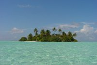

Територія країни складається з коралових островів, які розташовано в Індійському океані на 700 км на захід від Шрі-Ланки на вершинах давніх вулканів, які вкрито океанічними водами. Налічується 1196 коралових островів та піщаних мілин, які згруповано у 26 атолів. Їх витягнуто з півночі на південь майже на 600 км. На 202 островах мешкають люди. Більшість островів низовинні — жоден із них не підіймається вище 2 м над рівнем океану. На їх узбережжі — піщані пляжі з кокосовими пальмами.
Клімат — екваторіально-мусонний. Середньомісячні температури коливаються від +24 до +30 °С. Опадів — до 2500 мм на рік. Сезон дощів — протягом квітня-жовтня, коли дме південно-західний мусон. Сухий сезон супроводжується північно-східним мусоном (грудень-березень).
Мінеральні ресурси відсутні, немає навіть постійних джерел води.